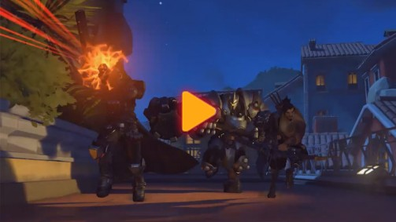

欢迎加入《守望先锋》
在《守望先锋》这款团队射击游戏中，你将控制许多风格迥异的英雄中的其中一个，与战友组成一支六人队伍，和对手抢夺目标、决一死战并夺取最终的胜利！
在《守望先锋》这款团队射击游戏中，你将控制许多风格迥异的英雄中的其中一个，与战友组成一支六人队伍，和对手抢夺目标、决一死战并夺取最终的胜利！

在开始《守望先锋》的游戏前，你需要了解如何选择英雄。
也许你会喜欢一只来自月球，经过基因改造并且使用着电磁炮的大猩猩科学家。也许你会青睐一个以禅坐姿势漂浮的机械僧侣，既能治疗盟友，也能削弱敌人。或者，你会喜欢一名能够快速传送、穿梭时间的自由战士？


在《守望先锋》中，英雄们要在世界各地的著名地点展开战斗，从代表了世界科技奇迹的努巴尼到展现了强大工业实力的沃斯卡娅，每张地图都具有鲜明的特点以及特殊的胜利条件。只有完全掌握了这些地图精髓，你的队伍才能取得胜利。
攻击方要尝试攻占一系列特殊目标，而防守方则要在时间耗尽前全力阻止攻击方达成目标。

 阿努比斯神殿
阿努比斯神殿

 花村
花村

 沃斯卡娅工业区
沃斯卡娅工业区
攻击方必须护送一个运载目标抵达终点，防守方则必须在时间耗尽前全力阻碍攻击方前进。

 监测站：直布罗陀
监测站：直布罗陀

 多拉多
多拉多

 66号公路
66号公路
双方队伍抢夺同一个目标点并要尽可能地保持对它的控制，在取得两次胜利后将赢得比赛。

 漓江塔
漓江塔

 伊利奥斯
伊利奥斯
 尼泊尔
尼泊尔
攻击方首先要攻占运载目标的所在地点，然后将运载目标护送到终点以取胜，防守方则尽全力阻止攻击方。

 国王大道
国王大道

 努巴尼
努巴尼

 好莱坞
好莱坞
 艾兴瓦尔德
艾兴瓦尔德
在你加入战斗之前，我们建议你先通过教学模式了解这款游戏。教学模式可以在短时间内通过有趣的形式为你展现《守望先锋》的基础知识。
技能就是《守望先锋》英雄们的独特武器，他们用技能来击败对手、保卫盟友或是进行快速移动——合理应用技能就是赢得比赛的关键。
最常用的就是主武器的自动射击（鼠标左键）。不论你的武器是短距武器、长距武器、冰霜喷射枪还是投射武器，你都不需要为其寻找弹药，只需要使用装填（R键）就能保持畅快的输出！有些武器有第二种攻击模式，这时就需要使用另一个射击按钮了（鼠标右键）。
不同的英雄具有的移动或支援技能也完全不同，譬如有些能放置光子哨戒炮，有些能使用音乐加速、有些能使用短距离传送。很多技能都具有冷却时间，一次使用后必须等待一段时间才能再度使用。
每个英雄都可以使用近战攻击（V键），近战攻击是一次快速的短距离攻击，不需要消耗任何弹药。你可以使用近战攻击来终结濒危的敌人或者在弹药装填的间隙继续造成伤害。
终极技能（Q键）是威力强大的技能，可以改变比赛的局势。随着比赛的进行，终极技能会缓慢充能，当你造成伤害或承受伤害时也会获得充能。只要你不改变英雄，即使死亡后你的充能进度也不会消失。
每场比赛开始前你都必须先选择英雄。通过考虑地图因素，和队友沟通以及观察队伍构成来调整自己的英雄选择 。如果你的队伍正准备防守一个目标，狂鼠或者堡垒可能是不错的选择。
一场比赛中形势总在不停变换，因此你有可能需要切换英雄。在队伍起始区域按下（H键）即可选择新的英雄。但要记住，切换英雄后终极技能的充能将会重置！
生命值即是在死亡之前一名英雄能够承受的伤害。生命值能够通过收集每张地图固定地点刷新的急救包进行恢复，或者通过一些技能（辅助英雄较多该类型技能）进行恢复。当英雄的生命值降到零时，他们就会死亡，但一小段时间后他们将在起始区域重生。当你等待重生时，队伍就会面临人数不足的劣势，所以保证自己和队友的存活十分重要！
除了生命值之外，通过护盾和护甲英雄也可以获得更强的生存能力，受到伤害时会先削减护盾和护甲，然后才是生命值。
满足胜利条件后，比赛结束。所有玩家都能观看本场比赛夺得全场最佳的玩家的精彩镜头回放，队友的比赛数据，还可以为互相的表现评分，选出比赛表现最佳的玩家以及为比赛提交反馈。补给有机会开出最佳特写，这个物品可以改变你夺得全场最佳时播放的英雄介绍动画。
在比赛过程中队伍经常要通过一些狭窄的区域，这些区域也是重要的战略要点，经常爆发团战。如果你要防守一处这样的区域，可以避过敌人的火力范围，再部署你的防御工事（狂鼠的捕兽夹、堡垒的哨卫模式或者托比昂的炮台）。
如果你想要穿过这么一个区域，可以选择具有高机动性技能的英雄（猎空的闪现、温斯顿的喷射背包，或是半藏和源氏的攀爬技能），或者具有强大范围杀伤能力的英雄（法老之鹰的火箭发射器），或者能够为团队多名队员提供支援技能的英雄（卢西奥的音障）。
尽量不要单独面对敌方队伍！团队行动才能确保队友之间的协作进攻，以及支援英雄的保护效果。
经过一些比赛后，你的等级将获得提升，还可以获得一些新的自定义物品，让你的英雄更有特色！你可以通过主菜单下的英雄菜单进行自定义调整。
补给可以开出各种自定义物品，每次升级你都可以获得一个补给，你也可以在商城中购买更多补给。补给有机会开出货币，让你直接解锁很多其他物品。每提升10级你还可以获得一个新的头像边框（在你获得所有头像边框之后将不再获得）。

当你完成了一些特殊成就后将获得成就点数以及特殊的成就徽章。你可以在成就页面查看你的成就以及徽章信息，同时也可以了解你自己的玩法和技能水平。你可以通过主菜单的浏览生涯概况选项和你的朋友分享这些成就。
《守望先锋》中有许多游戏内容，我们建议先从教学模式开始了解游戏的基础，然后在主菜单页面下体验其他模式：

这个模式你可以利用机器人锻炼枪法，了解技能的使用，磨练自己的技艺或者尝试体验新的英雄。
这个模式可以让你对抗电脑控制的敌人，并选择想要尝试的地图。在这个模式你可以体验不同的地图以及如何进行配合。
这个模式可以让你和技能相近的玩家进行一场比赛。

和朋友或其他玩家一起对抗电脑控制的对手也是体验《守望先锋》一种很好的方式，但如果你可以组队进行游戏，获得的奖励将会更多。
你可以从社交互动菜单中邀请你的好友（或者添加新的好友）加入队伍，点击（O键）键即可进入社交互动菜单。当组成队伍后，你们将拥有自己的语音和聊天频道。
 游戏安装提醒：安装游戏需要64位的 Windows® 7/Windows® 8/Windows® 10操作系统 (不支持Mac系统)查看详情>>
游戏安装提醒：安装游戏需要64位的 Windows® 7/Windows® 8/Windows® 10操作系统 (不支持Mac系统)查看详情>>